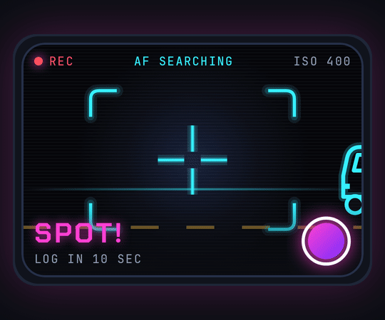

Animation af søgeren fra appens forside. Udgiver: Q Digital. English below.
Brug videoen til Facebook og Instagram. Den er skarpest og fylder mindst. Brug GIF'en i fora og mails, hvor video ikke vises. Kopiér adressen under filen, eller hent filen og læg den op selv. Du må gerne bruge dem, når du fortæller om Truckspotting.
Animation of the viewfinder from the app's home screen. Publisher: Q Digital.
Use the video for Facebook and Instagram. It is the sharpest and the smallest. Use the GIF in forums and emails, where video is not shown. Copy the address below the file, or download the file and upload it yourself. You are welcome to use them when you tell people about Truckspotting.
